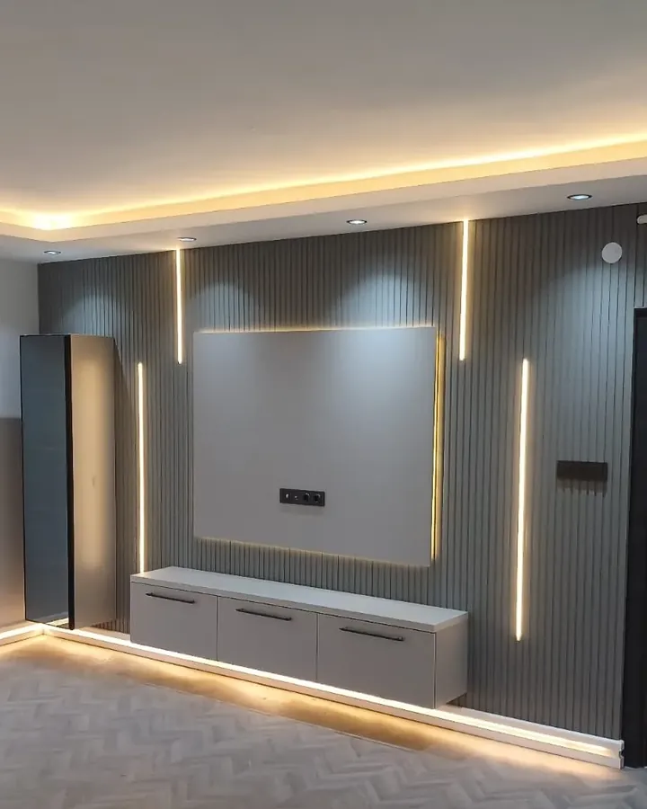
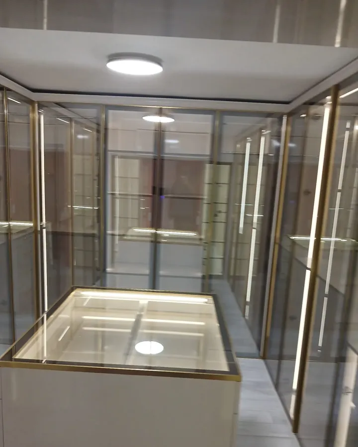
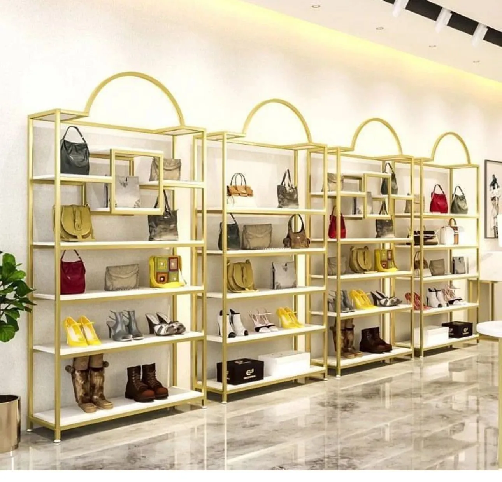

Ali delate na projektih zunaj Turčije?
Da. Projekte na Balkanu ocenimo glede na lokacijo, obseg, proizvodnjo, prevoz in montažo.
Öder Mimarlık načrtuje in usklajuje pohištvo po meri, kuhinje, talne obloge, poslovne prostore in stojnice na tekstilnih sejmih.
Da. Projekte na Balkanu ocenimo glede na lokacijo, obseg, proizvodnjo, prevoz in montažo.
Pošljite državo, približno površino, želeno storitev, referenčne slike in rok.
Notranja arhitektura, pohištvo po meri, kuhinje, talne obloge, bivalni prostori in tekstilne sejemske stojnice.
Öder Mimarlık načrtuje in usklajuje pohištvo po meri, kuhinje, talne obloge, poslovne prostore in stojnice na tekstilnih sejmih.
Öder Mimarlık načrtuje in usklajuje pohištvo po meri, kuhinje, talne obloge, poslovne prostore in stojnice na tekstilnih sejmih.

01Bivalni prostori, ki združujejo udobje, barve in drobne podrobnosti, ki so vaše.
 02
02Pametno shranjevanje, dobri materiali in čiste linije.
 03
03Izberimo teksturo in ton v skladu s celotnim prostorom.
 04
04Vesele in funkcionalne sobe, ki puščajo prostor za odraščanje.

05Začne se tam, kjer vprašate: »Je kaj takega sploh mogoče?«
Ogled na terenu, koncept, materiali in oblikovanje, prilagojeno prostoru.
Najprej vam prisluhnemo. Nato skupaj odkrijemo razporeditev, teksture in barve, ki ustrezajo vašemu vsakdanjemu življenju. Rezultat: prostor, ki ni le lep na pogled, ampak se v njem tudi dobro počutite.
Spoznajmo se ↗Oblikovanje, ki prostoruVsak projekt je nova zgodba. V kakšnem prostoru želi živeti vaša zgodba?


Fotografije so izbrane iz našega arhiva s terena. Opisi prikazujejo prostor na sliki; ne vsebujejo podatkov o projektih ali strankah.
Oglejte si podrobnosti izvedbe pohištva za trgovine, razstavne prostore, kuhinje in shranjevanje, vsakega pod naslovom ustreznega prostora.
Odprti smo za sodelovanje z blagovnimi znamkami pohištva, trgovinami z gradbenim materialom in maloprodajnimi ekipami pri izdelkih po naročilu, razstavnih enotah, trgovinskem pohištvu in ponovljivih rešitvah za notranje prostore.
Začnite pogovor o ponudbi za podjetja ↗

Skupaj ocenimo vaše projekte notranje opreme v Turčiji in Evropi. Delite lokacijo in obseg projekta, pa se bomo pogovorili o načinu dela, ki vam ustreza.
Spoznamo vaše potrebe, okus, lokacijo in prednostne naloge.
Skupaj določimo obseg, oblikovalski pristop in naslednje korake.
Dogovorjeno rešitev izvedemo v okviru določenega obsega in postopka.
Imate vprašanja o svojem projektu? Na kratko ga opišite v prvem sporočilu in ga bomo skupaj pregledali.
Delamo na notranji arhitekturi in oblikovanju prostorov, pohištvu in dekoraciji, kuhinjah in omarah po meri, talnih oblogah, ureditvi dnevne sobe, salona in otroške sobe ter na posebnih projektih. Obseg vašega projekta določimo na prvem sestanku.
Pregledujemo vaša povpraševanja za projekte v Turčiji in Evropi. Delite lokacijo, obseg projekta in storitev, ki jo potrebujete, pa se bomo skupaj dogovorili o primernem načinu dela.
Lokacija projekta, prostor ali soba, o kateri razmišljate, želena sprememba, okvirni časovni načrt in morebitne slike za navdih so dober začetek. Če imate proračun, nam njegova navedba pomaga pravilno oblikovati predlog.
Glede na potrebe je mogoče razmisliti o podpori, osredotočeni na oblikovanje, ali o delu, ki zajema oblikovanje in izvedbo. Obseg in ustrezna storitev se določita na prvem sestanku.
Na kratko opišite lokacijo, velikost in potrebe projekta. Po pregledu podatkov vam bomo predstavili obseg in postopek priprave ponudbe.
Povejte nam, kaj si predstavljate. V prvem pogovoru bomo pregledali potrebe projekta in možne naslednje korake.